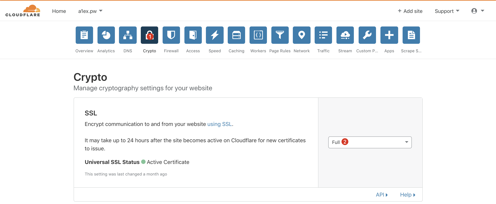
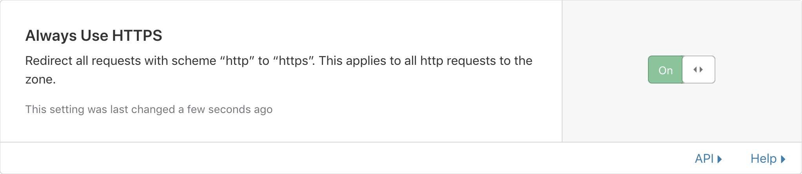
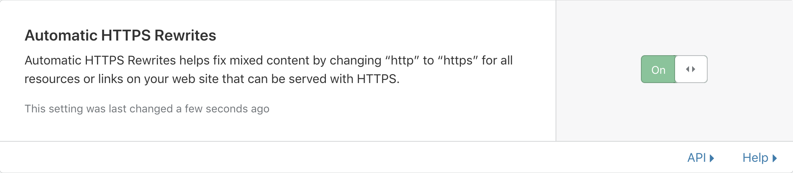

越来越多的人（包括我自己）都在使用 GitHub Pages 来托管自己的博客。相比传统的自行在服务器上搭建博客，GitHub Pages 具有免费、自带版本控制等许多优点。但是 GitHub Pages 只为默认的 *.github.io 域名提供强制 HTTPS 支持，本篇文章提供了通过 CloudFlare 的免费 CDN 服务为 GitHub Pages 博客开启 HTTPS 支持的方法。
0x01 自定义域名配置
注：进行之前需要将您的域名解析服务提供商（Nameserver）设置为 CloudFlare，设置的方法不在此文讨论范围，还请自行查找
首先在 博客目录/source 目录下新建文件 CNAME，并将域名写入。此处注意，如果想同时使用 www 访问博客的话不需要将 www 写入，下为示例：
1 | echo 'a1ex.pw' > CNAME |
然后在 CloudFlare 的控制面板中添加 CNAME 记录，并开启右侧的 CDN 服务。
0x02 SSL 设置
在 CloudFlare 控制面板中，点击上面的 Crypto 标签，将 SSL 一项设置为 Full，将 Always Use HTTPS、Automatic HTTPS Rewrites 开启，就 OK 了



另外可以根据实际需求选择是否开启 HSTS Preload 和 TLS v1.3。
0xFF 结语
在之前查找资料的时候发现了一些使用 Page Rules 来实现强制 HTTPS 的文章，不知道是不是因为写文时还没有上述的 Always Use HTTPS 和 Automatic HTTP Rewrites 功能，希望有了解的人能解答一下。
本站评论系统暂时还未上线，我谢罪
# EOF